Media Aspirasi, Notifikasi, dan Dukungan Siswa — “Teman Mengadu, Sekolah Berbenah”.
Panduan lengkap untuk siswa, guru BK, petugas unit, admin sekolah, pimpinan, dan superadmin.
Versi aplikasi: MANDU 2.0
Dokumen: panduan penggunaan dengan akun uji coba
Tanggal: 16 September 2026
Daftar Isi
1. Tentang MANDU 2.0
2. Peran dan hak akses
3. Akun uji coba
4. Masuk ke aplikasi
5. Panduan siswa: Lapor
6. Panduan siswa: Curhat
7. Panduan siswa: Butuh Bantuan
8. Panduan siswa: Aspirasi
9. Panduan siswa: Edukasi & notifikasi
10. Panduan Tim Verifikasi (admin & guru yang diberi hak)
11. Panduan Petugas Unit
12. Panduan Guru BK (Curhat & Butuh Bantuan)
13. Panduan Admin Sekolah
14. Dashboard sekolah (admin & pimpinan)
15. Panduan Superadmin
16. Aspirasi tanpa login (tamu)
17. Privasi dan kerahasiaan
18. Pertanyaan yang sering diajukan
1. Tentang MANDU 2.0
MANDU adalah ruang aman bagi siswa untuk bersuara, dan alat kerja bagi sekolah untuk menindaklanjuti
suara tersebut secara tertib dan terukur.
MANDU 2.0 memiliki lima pintu layanan:
Layanan
Untuk apa
Ditangani
Lapor
Masalah yang perlu ditangani sekolah: perundungan, fasilitas rusak, kebersihan, pembelajaran, administrasi, kesiswaan.
Tim Verifikasi → unit terkait
Curhat
Cerita pribadi lewat percakapan dengan guru BK, boleh memakai nama samaran.
Guru BK
Aspirasi
Saran, ide, usulan, dan kritik membangun untuk sekolah. Bisa dikirim tanpa login.
Admin sekolah / Tim Verifikasi
Butuh Bantuan
Minta bantuan tanpa harus menjelaskan panjang lebar.
Guru BK
Edukasi
Artikel, tautan, dan info beasiswa dari MANDU maupun sekolah.
Superadmin & sekolah
Alur kerja MANDU: siswa mengirim → Tim Verifikasi memeriksa → diteruskan ke unit → unit menindaklanjuti →
siswa menerima kabar dan memberi penilaian → sekolah melihat hasilnya di dashboard.
Satu aplikasi, banyak sekolah. Setiap sekolah punya kode gabung sendiri (contoh: DEMO01).
Data satu sekolah tidak pernah terlihat oleh sekolah lain.
2. Peran dan hak akses
Peran
Yang bisa dilakukan
Siswa
Mengirim laporan, aspirasi, curhat, dan permintaan bantuan; memantau status; memberi penilaian; membaca Edukasi.
Tim Verifikasi admin + guru yang ditunjuk
Memeriksa laporan baru, meminta data tambahan, meneruskan ke unit, menolak laporan, mengalihkan unit, menanggapi aspirasi.
Petugas Unit
Menangani laporan yang diteruskan ke unitnya: menambah perkembangan, mengunggah dokumentasi, menyelesaikan laporan.
Guru BK / Konselor
Menangani Curhat dan Butuh Bantuan, mencatat catatan kasus, mengusulkan jadwal temu; juga menangani laporan unit BK/PPKS.
Admin Sekolah
Semua kewenangan Tim Verifikasi, ditambah kelola anggota, impor akun NISN, undangan staf, pengaturan sekolah, konten Edukasi sekolah, dan dashboard.
Pimpinan
Membaca laporan, aspirasi, dan dashboard. Tidak mengubah status dan tidak melihat isi Curhat.
Superadmin
Mengelola sekolah dan admin sekolah, konten Edukasi global, serta dashboard lintas sekolah (hanya angka).
Tamu
Mengirim aspirasi tanpa login lewat kode atau QR sekolah.
Yang tidak bisa dilihat siapa pun selain yang berhak: isi Curhat dan Butuh Bantuan hanya untuk
siswa yang bersangkutan dan guru BK. Identitas pelapor yang memilih “Rahasiakan identitas” tidak terlihat oleh staf mana pun,
termasuk admin dan pimpinan.
3. Akun uji coba
MANDU 2.0 dipakai bersama oleh banyak sekolah. Untuk mencoba tanpa mengganggu data sekolah
sungguhan, tersedia SMA Negeri Demo MANDU dengan kode gabung DEMO01.
Akun di aplikasi produksi
Aplikasi MANDU di ponsel dan tampilan web teman-ngadu.web.app
memakai akun berikut. Semua memakai kata sandi [disimpan di Play Console > App access] dan masuk lewat menu
“Staf sekolah? Masuk dengan email”.
Peran
Akun
Dipakai untuk mencoba
Admin Sekolah (Tim Verifikasi)
admin@smandemo.sch.id
Verifikasi laporan, anggota, aspirasi, dashboard
Pimpinan
kepsek@smandemo.sch.id
Mode pantau: dashboard dan daftar laporan
Guru BK (Tim Verifikasi)
bk@smandemo.sch.id
Curhat, Butuh Bantuan, laporan keamanan
Petugas Sarpras
sarpras@smandemo.sch.id
Menangani laporan fasilitas & kebersihan
Petugas Kurikulum
kurikulum@smandemo.sch.id
Menangani laporan pembelajaran
Siswa
siswa@smandemo.sch.id (Budi Santoso)
Semua layanan siswa — akun ini juga dipakai peninjau Google Play
Siswa kedua
siswa2@smandemo.sch.id (Siti Aminah)
Dukungan aspirasi, laporan anonim
Calon siswa
calon.siswa@smandemo.sch.id
Menunggu persetujuan admin
Siswa akun NISN
kode DEMO01 · NISN 0059990001
Masuk tanpa Google; wajib ganti kata sandi saat pertama masuk
Kata sandi demo bersifat publik. Akun di atas hanya untuk mencoba aplikasi.
Jangan mengisi data pribadi yang sesungguhnya, dan ganti kata sandinya bila sekolah demo ini dipakai
untuk keperluan lain.
Data contoh yang sudah tersedia
Agar setiap layanan bisa langsung dicoba, sekolah demo berisi: 6 laporan (dari menunggu verifikasi
sampai selesai dan dinilai), 3 aspirasi (termasuk satu dari tamu tanpa login), 2 permintaan Butuh Bantuan,
1 percakapan Curhat, dan 4 konten Edukasi.
4. Masuk ke aplikasi
Halaman awal: tiga cara masuk dan tombol aspirasi tanpa login.
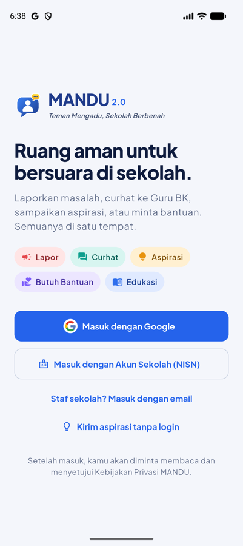
Layar “Masuk dengan Email” untuk akun yang dibuatkan sekolah: guru, staf, dan siswa.
Tiga cara masuk
Masuk dengan Google — untuk siswa dan staf yang memakai akun Google sekolah atau pribadi.
Masuk dengan Akun Sekolah (NISN) — untuk siswa yang akunnya dibuat admin lewat impor CSV: masukkan kode sekolah, NISN, dan kata sandi awal. Saat pertama masuk, aplikasi meminta penggantian kata sandi.
Masuk dengan email — untuk guru dan staf yang dibuatkan akun oleh admin sekolah.
Bisa juga lewat komputer. Selain aplikasi di ponsel, MANDU dapat dibuka di peramban
melalui teman-ngadu.web.app — praktis bagi guru dan admin yang
bekerja dari laptop, misalnya saat memeriksa laporan atau melihat dashboard.
Langkah pertama setelah masuk
Membaca dan menyetujui Kebijakan Privasi MANDU.
Bagi siswa baru: Gabung Sekolah dengan mengetik kode sekolah atau memindai QR, lalu mengisi nama dan kelas.
Menunggu persetujuan admin. Bila email siswa memakai domain resmi sekolah, persetujuan berjalan otomatis.
Kode sekolah bisa dilihat admin di menu Sekolah → Pengaturan, lengkap dengan QR untuk ditempel di mading.
5. Panduan siswa: Lapor
Gunakan Lapor untuk masalah yang perlu ditangani sekolah. Laporan diperiksa Tim Verifikasi lalu
diteruskan ke unit yang tepat.
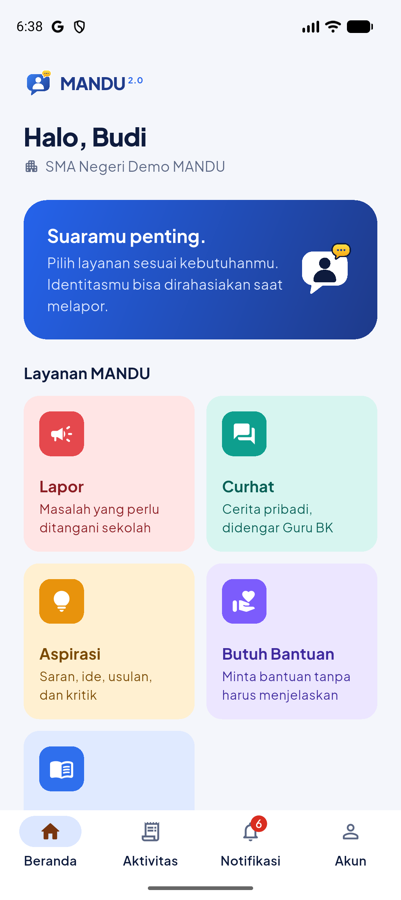
Beranda siswa dengan lima pintu layanan.
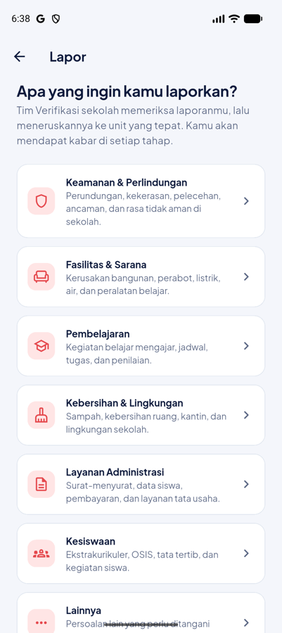
Langkah 1: pilih jenis masalah.
Ketuk kartu Lapor di beranda.
Pilih kategori yang paling sesuai, lalu pilih jenis masalah.
Isi judul singkat, cerita kejadian, dan lokasi. Tanggal dan jam kejadian membantu sekolah menelusuri.
Untuk kategori Keamanan & Perlindungan, ada isian tambahan: peranmu (korban/saksi), seberapa sering, dan pihak yang terlibat. Semuanya boleh dikosongkan.
Lampirkan foto atau PDF (maksimal 5 berkas, masing-masing 10 MB) bila ada bukti. Nomor WhatsApp juga boleh diisi (opsional) bila sekolah perlu menghubungimu langsung.
Atur “Rahasiakan identitasku”. Untuk laporan keamanan, pilihan ini menyala otomatis.
Ketuk Kirim laporan, lalu konfirmasi. Kamu akan menerima nomor laporan, misalnya MND-2026-0007.
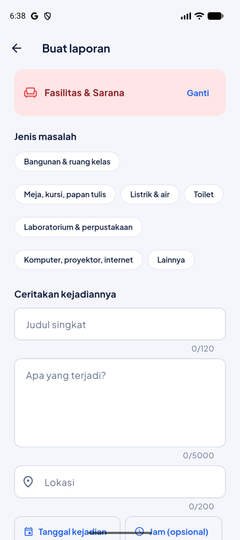
Formulir laporan beserta pengaturan privasi.
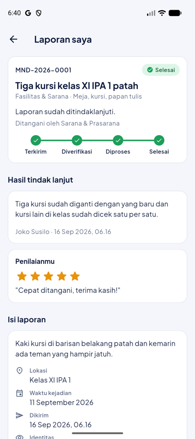
Detail laporan: status, riwayat, dan tindakan yang tersedia.
Memantau laporan
Tab Aktivitas memuat semua laporanmu beserta statusnya.
Status berjalan: Menunggu verifikasi → Diteruskan ke unit → Sedang diproses → Selesai.
Bila sekolah meminta tambahan data, statusnya menjadi Perlu dilengkapi; ketuk Lengkapi laporan untuk menjawab.
Selama laporan belum diteruskan, kamu bisa membatalkan laporan.
Setelah selesai, beri penilaian 1–5 bintang dan komentar bila perlu.
6. Panduan siswa: Curhat
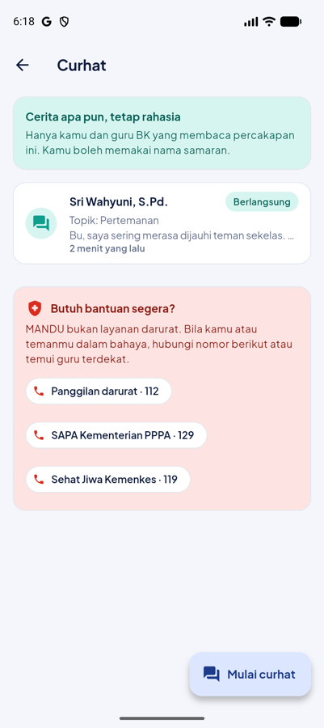
Daftar percakapan dan kontak bantuan darurat.
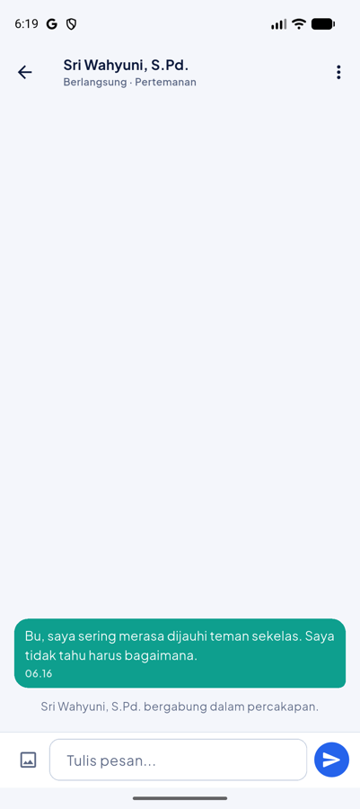
Percakapan dengan guru BK.
Ketuk kartu Curhat, lalu Mulai curhat.
Pilih guru BK tertentu atau “Siapa saja yang tersedia”.
Bila belum siap memakai nama asli, nyalakan Pakai nama samaran dan isi nama samaranmu.
Tulis topik (opsional) dan pesan pertama, lalu kirim.
Balas pesan seperti chat biasa; kamu juga bisa mengirim gambar.
Bila sudah nyaman, buka menu ⋮ → Buka identitasku agar guru BK tahu siapa kamu.
Menu ⋮ juga berisi Kontak darurat dan Tutup percakapan.
Penting. MANDU bukan layanan darurat. Bila keadaan mendesak, hubungi 112, SAPA 129, atau
Sehat Jiwa 119 ext. 8, dan temui guru terdekat.
7. Panduan siswa: Butuh Bantuan
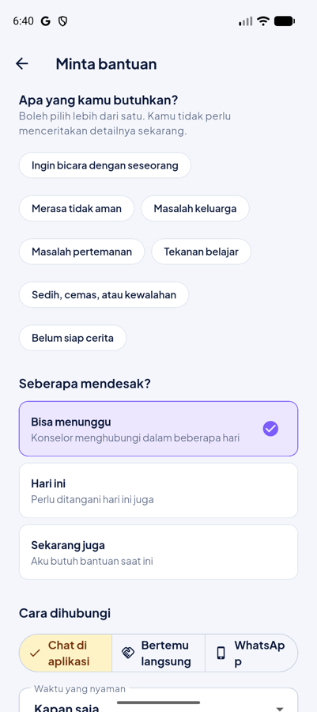
Cukup pilih kebutuhan, urgensi, dan cara dihubungi.
Ketuk kartu Butuh Bantuan lalu tombol Minta bantuan.
Pilih satu atau beberapa kebutuhan, termasuk pilihan “Belum siap cerita”.
Pilih urgensi: bisa menunggu, hari ini, atau sekarang juga.
Pilih cara dihubungi (chat, bertemu, atau WhatsApp) dan waktu yang nyaman.
Kirim. Guru BK akan mengambil permintaanmu; bila memilih chat, percakapan Curhat otomatis dibuka.
Selama belum diambil guru BK, permintaan bisa dibatalkan. Setelah selesai, guru BK menuliskan pesan penutup yang bisa kamu baca.
8. Panduan siswa: Aspirasi
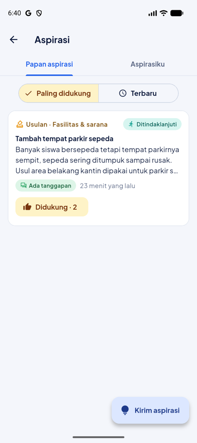
Papan aspirasi: usulan yang disetujui sekolah beserta dukungan siswa.
Ketuk kartu Aspirasi. Tab Papan aspirasi memuat aspirasi yang ditampilkan sekolah; tab Aspirasiku memuat aspirasi yang kamu kirim.
Ketuk Kirim aspirasi, pilih jenis (saran, ide, usulan, kritik) dan topik.
Tulis judul dan isi aspirasi. Kata kasar akan disamarkan otomatis.
Bila ingin, nyalakan Rahasiakan identitasku; kamu tetap menerima tanggapan sekolah.
Dukung aspirasi teman dengan tombol Dukung (satu suara per siswa).
Status aspirasi: Diterima → Sedang ditinjau → Ditindaklanjuti → Direalisasikan, atau
Belum dapat ditindaklanjuti yang selalu disertai tanggapan resmi sekolah.
9. Panduan siswa: Edukasi & notifikasi
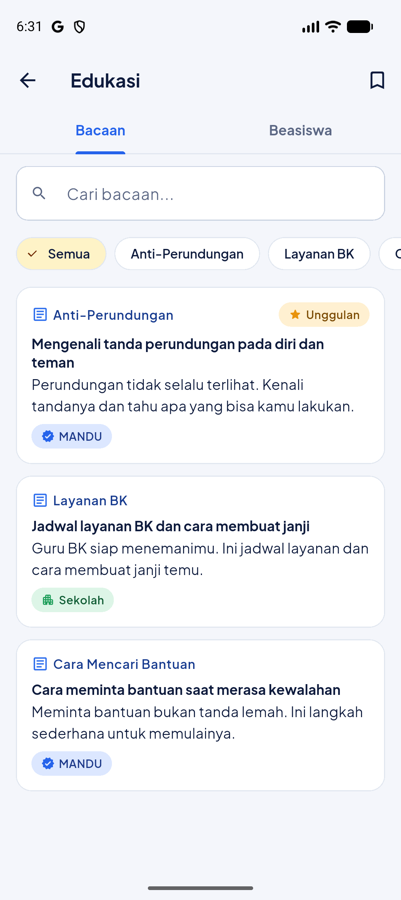
Bacaan dan info beasiswa dari MANDU serta sekolah.
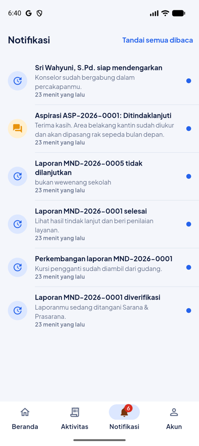
Kotak notifikasi: kabar laporan, aspirasi, dan pesan.
Bacaan — cari artikel, saring menurut kategori, dan simpan artikel dengan ikon bookmark.
Beasiswa — daftar beasiswa diurutkan menurut tenggat; tombol pendaftaran membuka situs resmi.
Tersimpan — ikon bookmark di kanan atas menampilkan semua artikel yang kamu simpan.
Notifikasi — tab ketiga memuat kabar terbaru: perubahan status laporan, permintaan data, tanggapan aspirasi, dan balasan guru BK. Ketuk untuk langsung membuka detailnya; geser untuk menghapus.
10. Panduan Tim Verifikasi
Tim Verifikasi adalah admin sekolah dan guru/staf yang diberi hak verifikasi. Merekalah yang memutuskan
laporan diteruskan, dilengkapi, atau ditolak.
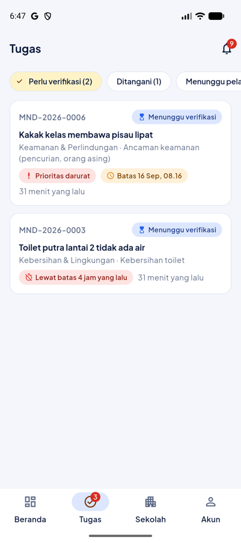
Tab Tugas: antrean laporan dengan penanda prioritas dan batas waktu.
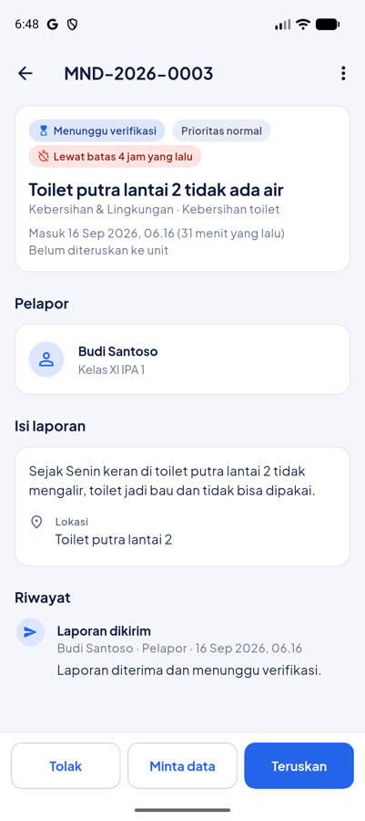
Detail laporan dengan tiga tombol keputusan di bawah layar.
Buka tab Tugas. Saring dengan chip Perlu verifikasi, Ditangani, Menunggu pelapor, atau Selesai.
Laporan darurat dan yang lewat batas waktu selalu berada di urutan teratas.
Buka sebuah laporan, baca isi dan lampirannya. Perhatikan penanda prioritas, kemungkinan laporan ganda, dan saran kategori.
Pilih salah satu keputusan:
Teruskan — tentukan kategori, jenis masalah, unit penangan, dan prioritas; boleh menambahkan pesan untuk pelapor.
Minta data — tuliskan data yang kurang; status berubah menjadi Perlu dilengkapi.
Tolak — pilih alasan (duplikat, tidak valid, bukan wewenang, lainnya) dan jelaskan secukupnya.
Setelah diteruskan, kamu masih bisa Alihkan unit atau menambahkan Catatan internal lewat menu ⋮.
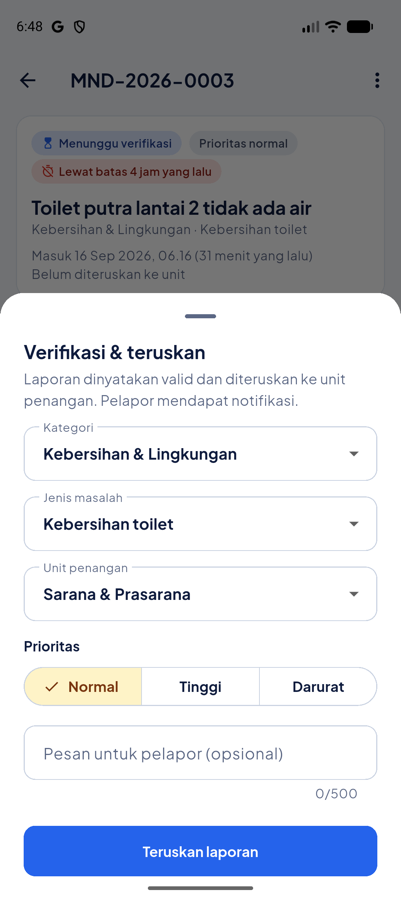
Formulir “Verifikasi & teruskan”.
11. Panduan Petugas Unit
Buka tab Tugas; kamu hanya melihat laporan yang diteruskan ke unitmu.
Buka laporan, lalu ketuk Tambah progres untuk mengabari pelapor. Status otomatis menjadi Sedang diproses.
Gunakan sakelar “Hanya untuk staf” bila catatan tidak perlu dibaca pelapor.
Unggah dokumentasi bila perlu (foto sebelum/sesudah).
Bila selesai, ketuk Selesaikan, tulis ringkasan tindak lanjut, dan lampirkan dokumentasi. Pelapor akan diminta memberi penilaian.
Batas waktu. Setiap laporan punya batas verifikasi dan tindak lanjut sesuai pengaturan sekolah.
Laporan yang terlambat ditandai merah dan pengingat otomatis dikirim tiap jam.
12. Panduan Guru BK
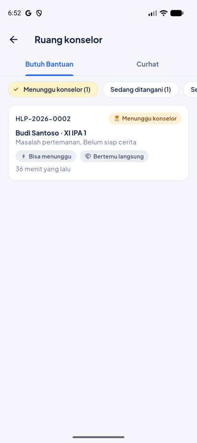
Ruang konselor: antrean Butuh Bantuan dan percakapan Curhat.
Butuh Bantuan
Buka Beranda → Ruang konselor → tab Butuh Bantuan.
Baca permintaan yang Menunggu konselor; permintaan darurat ditandai jelas.
Ketuk Ambil permintaan ini. Bila siswa memilih chat, percakapan otomatis dibuka dengan pesan pembuka.
Setelah pendampingan selesai, ketuk Tutup dan tulis pesan penutup untuk siswa.
Curhat
Tab Curhat memuat percakapan yang menunggu konselor dan percakapan milikmu.
Buka percakapan yang menunggu lalu ketuk Ambil untuk mulai membalas.
Menu ⋮ menyediakan Catatan kasus (privat, dengan penanda risiko) dan Usulkan jadwal temu.
Bila siswa memakai nama samaran, identitas hanya terlihat setelah siswa membukanya sendiri.
Kerahasiaan. Admin sekolah dan pimpinan tidak dapat membaca isi Curhat maupun permintaan bantuan.
Dashboard hanya menampilkan jumlahnya.
13. Panduan Admin Sekolah
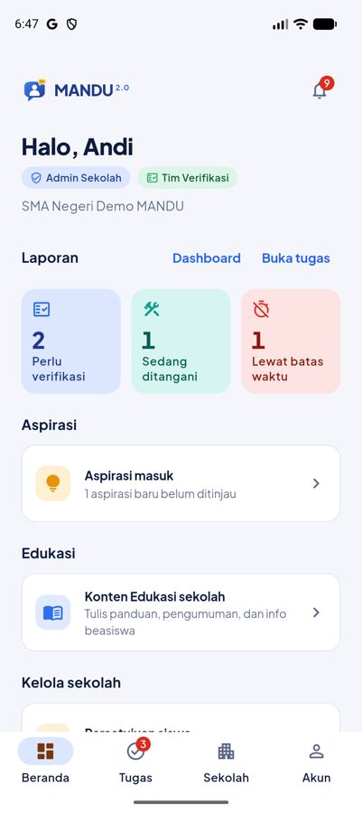
Beranda admin: ringkasan laporan dan pintasan pengelolaan.
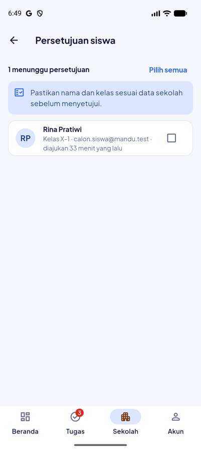
Menyetujui siswa yang mendaftar dengan kode sekolah.
Anggota
Persetujuan siswa — periksa nama dan kelas, lalu setujui atau tolak (sekaligus banyak).
Anggota & peran — ubah peran, unit yang ditangani, dan hak Tim Verifikasi; keluarkan anggota bila perlu.
Undang staf — kirim undangan lewat email, atau buatkan akun email/sandi bagi staf tanpa Google.
Impor akun NISN — unggah CSV berisi NISN, nama, dan kelas; unduh daftar kata sandi awal untuk dibagikan.
Pengaturan sekolah
Nama, jenjang, alamat, dan domain email sekolah (untuk persetujuan otomatis).
Kode gabung dan QR — bagikan atau ganti bila bocor.
Layanan aktif — nyalakan/matikan Lapor, Curhat, Aspirasi, Butuh Bantuan, Edukasi.
Aspirasi tanpa login dan papan aspirasi.
Target waktu verifikasi, tindak lanjut, dan laporan darurat.
Aspirasi dan Edukasi
Aspirasi masuk — beri status dan tanggapan resmi, lalu putuskan apakah aspirasi ditampilkan di papan.
Konten Edukasi sekolah — tulis artikel, tautan, atau info beasiswa khusus sekolahmu; simpan sebagai draf atau terbitkan.
14. Dashboard sekolah
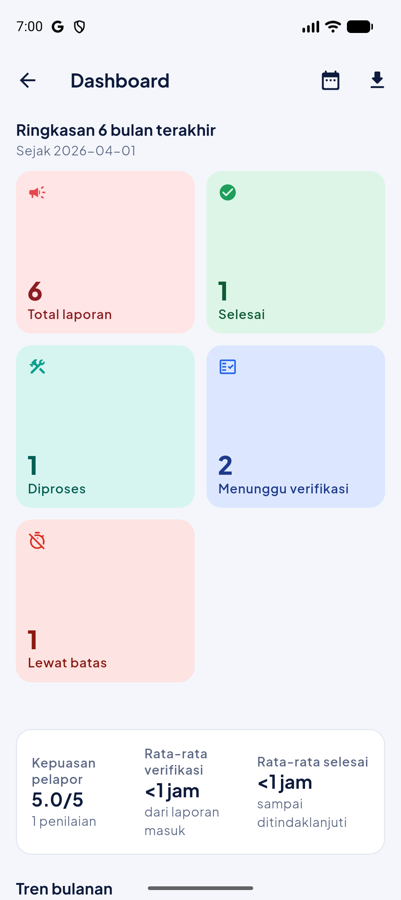
Dashboard: ringkasan, tren bulanan, kategori, dan kinerja unit.
Buka Beranda → Dashboard (tersedia untuk admin, pimpinan, dan Tim Verifikasi). Dari laptop,
buka teman-ngadu.web.app lalu masuk dengan akun yang sama.
Pilih periode 3, 6, atau 12 bulan lewat ikon kalender.
Baca kartu ringkas: total laporan, selesai, sedang diproses, menunggu verifikasi, dan lewat batas waktu.
Periksa rata-rata waktu verifikasi dan penyelesaian, serta kepuasan pelapor.
Telusuri tren bulanan, komposisi kategori, kinerja tiap unit (termasuk persentase tepat waktu), dan lokasi yang sering dilaporkan.
Ketuk ikon unduh untuk unduh rekap yang bisa dibuka di Excel atau Google Sheets.
Untuk evaluasi. Bagian “Layanan lain” menampilkan jumlah aspirasi, permintaan bantuan, dan percakapan
curhat — tanpa isi percakapan — agar sekolah tetap dapat mengukur beban layanan.
15. Panduan Superadmin
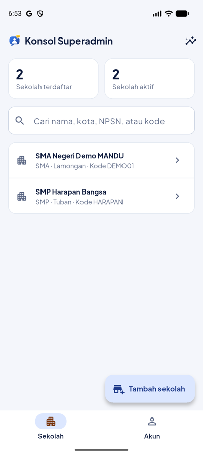
Daftar sekolah yang terdaftar di MANDU.
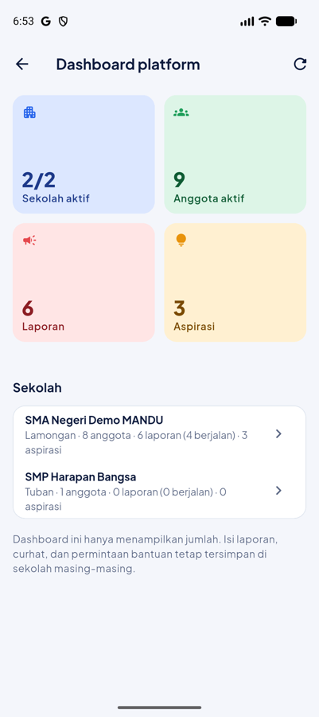
Dashboard platform: volume lintas sekolah.
Tambah sekolah — isi nama, jenjang, kota, provinsi; kode gabung dibuat otomatis (boleh ditentukan sendiri).
Kelola sekolah — buka sekolah untuk mengatur anggota, unit, dan pengaturannya seperti admin sekolah.
Edukasi global — konten yang dibaca semua sekolah.
Dashboard platform — jumlah sekolah aktif, anggota, laporan, dan aspirasi per sekolah.
Batas kewenangan superadmin: tidak dapat membaca isi laporan, curhat, maupun permintaan bantuan sekolah.
16. Aspirasi tanpa login (tamu)
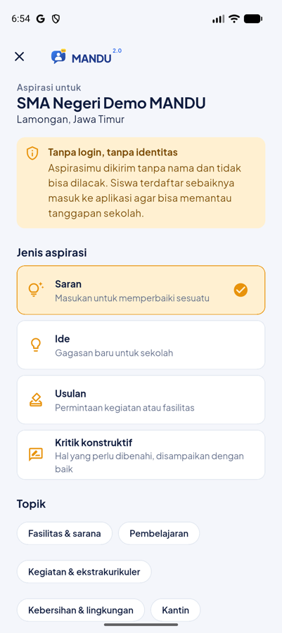
Formulir aspirasi tanpa login lewat kode sekolah.
Di halaman awal aplikasi, ketuk Kirim aspirasi tanpa login, lalu masukkan kode sekolah.
Melalui web, buka teman-ngadu.web.app/s/DEMO01/aspirasi atau pindai QR sekolah.
Pilih jenis dan topik, tulis aspirasi, lalu kirim. Nomor aspirasi ditampilkan sebagai tanda terima.
Aspirasi tamu dikirim tanpa identitas dan tidak dapat dilacak. Untuk memantau tanggapan, siswa disarankan masuk ke aplikasi.
17. Privasi dan kerahasiaan
Data
Siapa yang bisa melihat
Laporan biasa
Tim Verifikasi, unit penangan, admin, pimpinan
Identitas pelapor yang dirahasiakan
Tidak ada seorang pun di sekolah; hanya sistem yang memakainya untuk mengirim notifikasi
Isi Curhat
Siswa yang bersangkutan dan guru BK yang menangani
Permintaan Butuh Bantuan
Siswa yang mengirim dan guru BK
Catatan kasus konselor
Hanya guru BK yang menangani
Aspirasi di papan
Siswa sekolah tersebut, tanpa nama pengirim
Dashboard
Angka saja; isi percakapan tidak pernah ditampilkan
Setiap perubahan penting — misalnya mengubah status laporan — diproses di server MANDU, bukan di ponsel.
Karena itu tidak ada pengguna yang bisa mengubah status laporan orang lain atau membuka data yang bukan haknya,
sekalipun ia mencoba mengakalinya.
18. Pertanyaan yang sering diajukan
Saya lupa kata sandi akun NISN.
Hubungi admin sekolah. Admin dapat membuat kata sandi baru lewat Anggota → detail siswa → Buat password baru.
Apakah guru tahu siapa yang melapor?
Tidak, bila kamu menyalakan “Rahasiakan identitasku”. Nomor WhatsApp yang kamu isi sendiri dapat membuatmu dikenali.
Laporan saya ditolak. Apa yang harus dilakukan?
Baca alasannya di detail laporan. Bila masalah belum selesai, kirim laporan baru dengan data yang lebih lengkap,
atau sampaikan lewat Aspirasi jika sifatnya usulan.
Berapa lama laporan diproses?
Sesuai target sekolah: umumnya 24 jam untuk verifikasi (2 jam untuk laporan darurat) dan 72 jam untuk tindak lanjut.
Apakah aspirasi saya pasti tampil di papan?
Tidak semua. Admin memilih aspirasi yang bermanfaat bagi banyak siswa. Semua aspirasi tetap mendapat tanggapan resmi.
Saya siswa pindahan. Bagaimana pindah sekolah di MANDU?
Minta admin sekolah lama mengeluarkan keanggotaanmu, lalu gabung ke sekolah baru memakai kode sekolah tersebut.